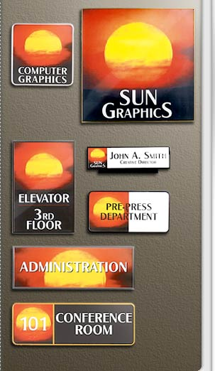

|
Matte clear acrylic
based lenses are laser cut to snap in and out
of anodized aluminum frames, round or square
cornered. Lenses can be screen printed, and
have tactile or Braille mounted to them while
exposing a paper graphic.
- Available in nine anodized
finishes: Polished Rose Gold, Polished Yellow
Gold, Polished Silver, Arch Bronze, JRS Bronze,
Matte Black, Satin Silver, Satin Rose Gold,
and Satin Yellow Gold.
- Frames have 1/8" wall thickness,
1/2" outside depth with a 1/8" Masonite backer.
- Lenses snap in and out with
the aid of a suction cup placed in the center
of the lens.
- Dividers are used to make
multi-lens compartments.
- Special matte black dividers
can be used to make compartments under a single
lens.
- Frames can be made to accommodate
paper and 1/32", 1/16", or 1/8" sign material.
|

|